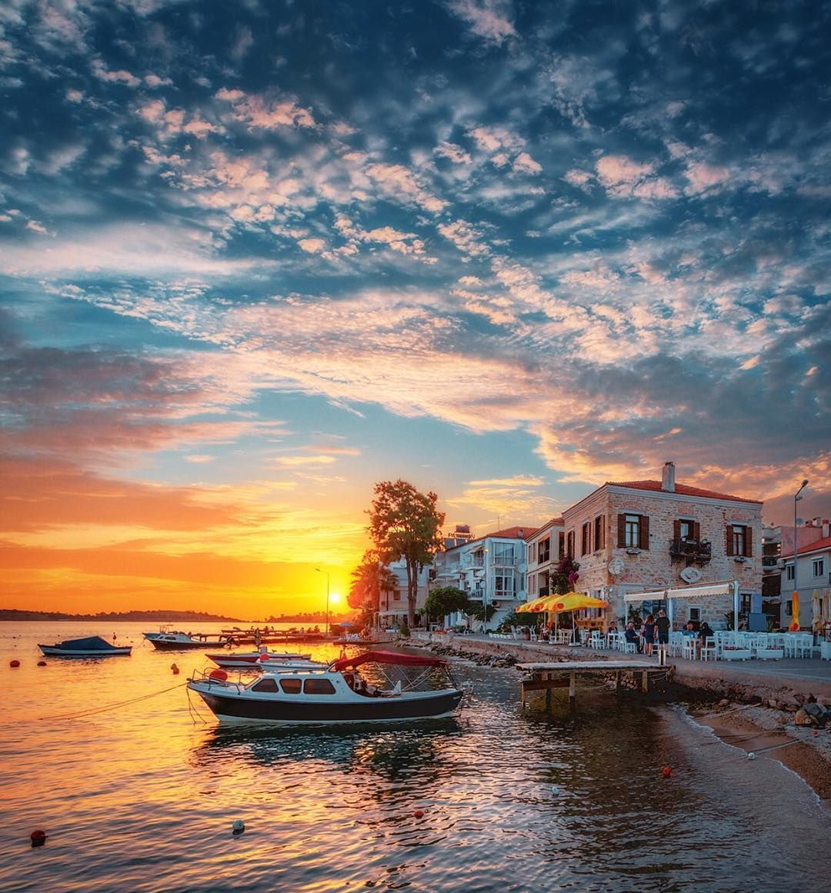
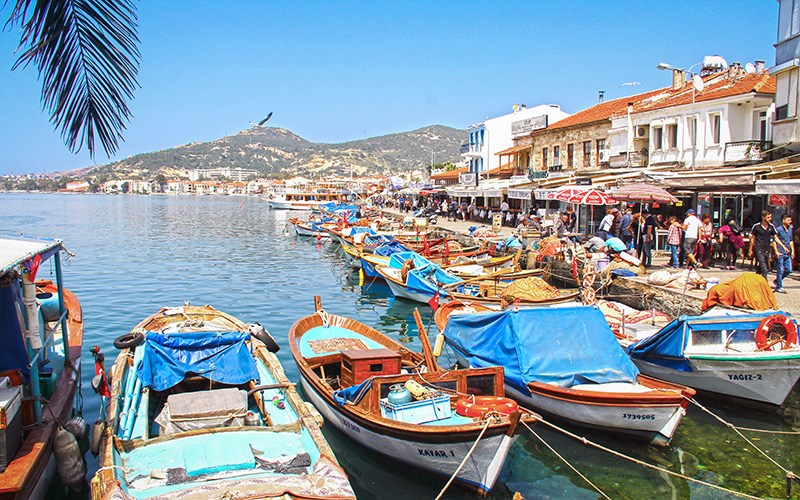
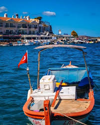
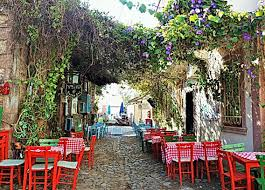
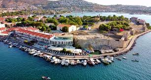
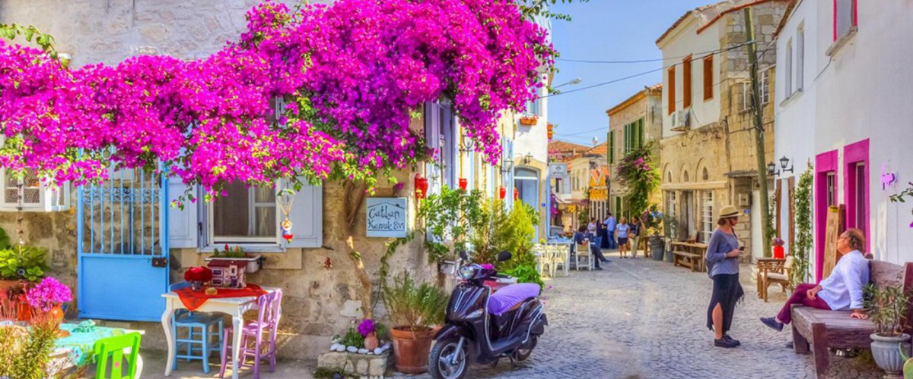

İZMİR
Foça, Türkiye'nin İzmir il merkezinin yaklaşık 69 km kuzeybatısında İzmir’in bir ilçesidir. Bu nedenle Foça'nın kendisine yerel olarak günlük dilde "Eski Foça" denilir. Foça, Phocaea (Yunanca:Φώκαια) antik kentinin bulunduğu yere kurulmuştur.Foça Adaları'nda yaşayan foklardan adını alan Phokaia (Yunanca: Φώκαια, "Phocaea"), Aiollar tarafından MÖ 11. yüzyılda kuruldu. O zamanlarda en önemli İyonya'nın yerleşim yerlerinden biri olan Phokaia'de İyon yerleşimi MÖ 9. yüzyıl da başlamıştır. Tarihte usta denizci olarak bilinen Phokaialılar, ayrıca mühendislikteki gelişmişlikleri ve başarıları ile Ege, Akdeniz ve Karadeniz'de birçok sayıda koloni kurmuşlardır.
Galeri

Beş Kapılar Kalesi

Çarşı Girişi

Denizden Manzaralar

Manzara

Tatlı Bir Yer

Eski Foça

Göz Alıcı Evler